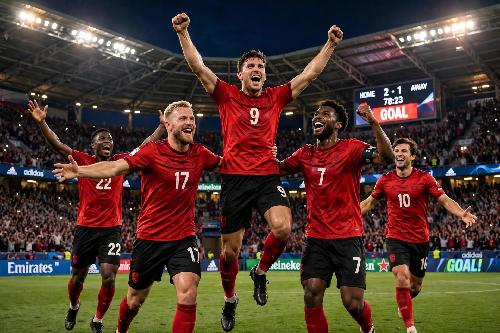

Bayer 04 Leverkusen

Bayer 04 Leverkusen Fußball GmbH, commonly known as Bayer Leverkusen, is a German professional football club based in Leverkusen, North Rhine-Westphalia. Founded in 1904 by employees of the pharmaceutical company Bayer, whose headquarters are in the city, the club plays in the Bundesliga and hosts matches at the BayArena.
| Full name | Bayer 04 Leverkusen Fußball GmbH |
|---|---|
| Nickname | Die Werkself (The Factory Team) |
| Founded | 1 July 1904 |
| Ground | BayArena (capacity c. 30,210) |
| League | Bundesliga |
History
Leverkusen were promoted to the Bundesliga in 1979 and have remained there ever since. The club won its first major trophy, the UEFA Cup, in 1988, overturning a 3–0 first-leg deficit against Espanyol. They added the DFB-Pokal in 1993. Around the turn of the century, a team featuring Michael Ballack, Zé Roberto, Lúcio and Dimitar Berbatov repeatedly finished runners-up — most painfully in 2001–02, when Leverkusen lost the league, cup and Champions League finals in the space of weeks, earning the mocking nickname "Neverkusen" (or Vizekusen, "vice-champions").
The invincible season
Under coach Xabi Alonso, Leverkusen won their first Bundesliga title in 2023–24 without losing a single match — the first unbeaten season in Bundesliga history — as part of a European-record 51-game unbeaten run, and completed a domestic double by winning the DFB-Pokal, losing only the Europa League final to Atalanta.
Honours
- Bundesliga: 2023–24
- DFB-Pokal: 1992–93, 2023–24
- UEFA Cup: 1987–88
- DFL-Supercup: 2024